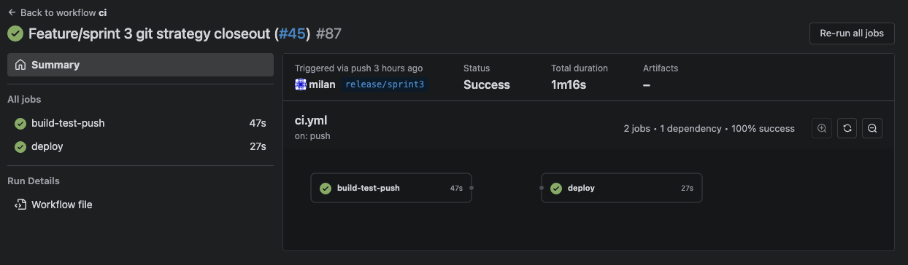
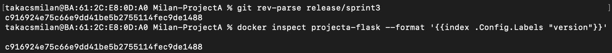
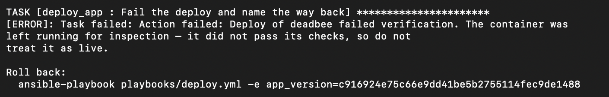
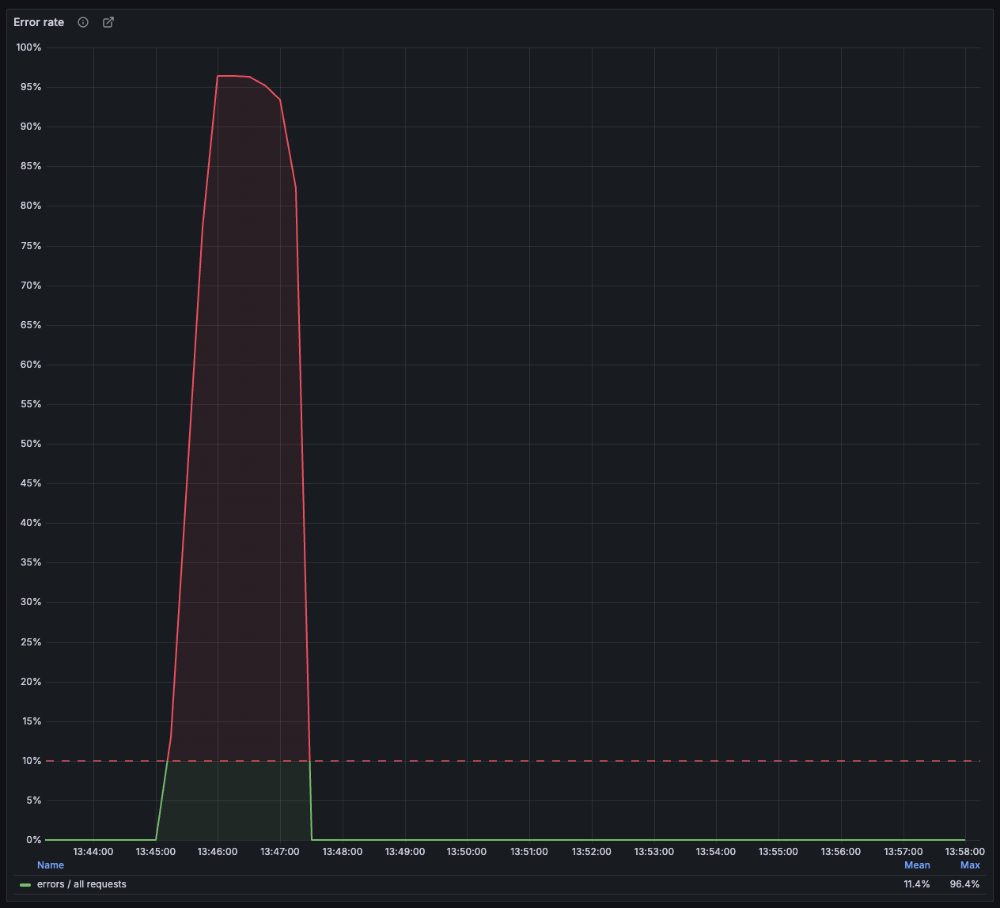
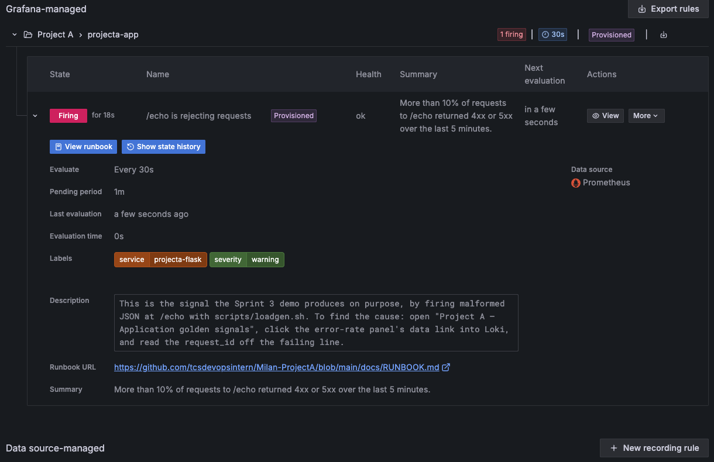
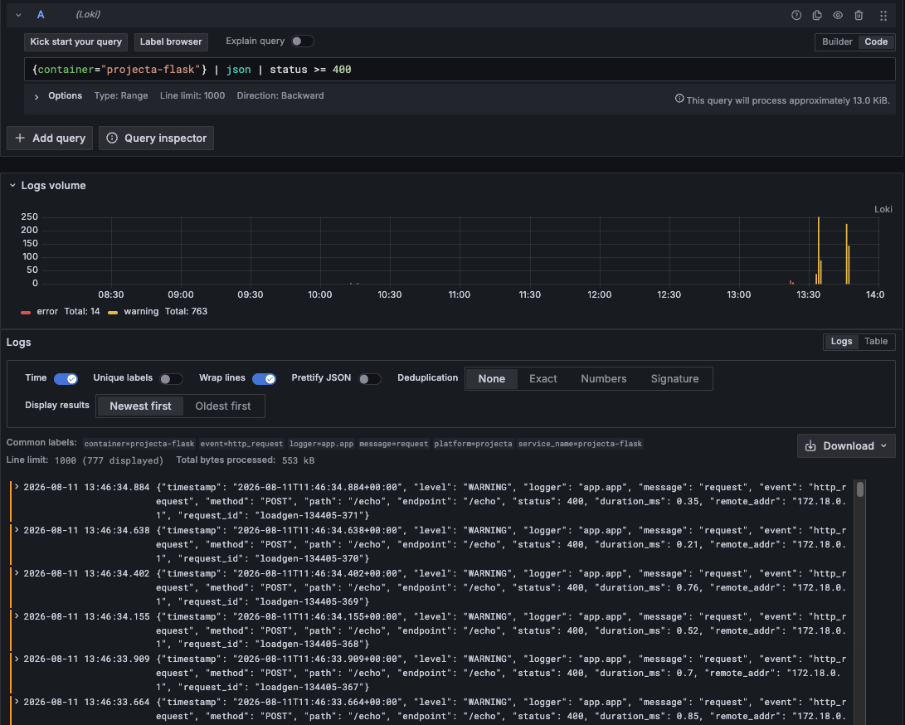
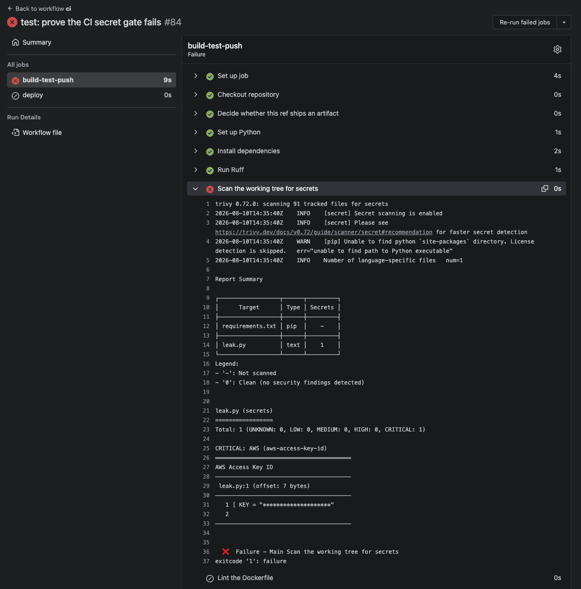

Three sprints. One question:
can I trust what's running?
Milán Takács · release/sprint3 · captured 2026-08-11
A small app, a README, and a deploy that was me typing commands in the right order and remembering not to make a mistake.
Everything after this slide is an answer to that sentence.
Watching something you can't reliably deploy isn't observability, it's anxiety.
fastest "no" so far
slowest "yes"
Cheap opinions first. Expensive ones only if it survives them.

Green. Style, secrets, tests, scan, build, push, deploy.

What the container says = what I pushed. Captured this morning.
Every test was green — against software nobody was actually running. A machine caught it in seconds. I never would have.
Fixed both causes, not just the version. One of them was a mistake in my own documentation.
27s + 7s. Then 27s + 7s again. Then 29s + 8s this morning. Repeatable to a few seconds — not exact, and I'm not going to pretend otherwise.
A rollback plan nobody has run is a paragraph. This one is a script, and all three transcripts are in the repo.

It refuses, then hands me the exact command — old commit already filled in. Run again this morning.
to recover
actually down
The container gets swapped before it gets checked — so the broken one served traffic for the 29 seconds the checks spent retrying.
And back then, the only reason I knew it happened is that I was watching. That gap is why the last sprint exists.

Flat and boring, until I started sending rubbish. Nobody had to go looking.

One bad second doesn't wake anyone. One bad minute does.

Right lines, right moment, no search typed. Each one tagged with the request that caused it.

Skipped the check on my laptop. The pipeline caught it anyway — 11 seconds.
A rule in a document depends on me being careful. These are what an enforced rule would have caught for me.
Found both myself, wrote both down, fixed the second one this morning.
My first plan had twice the work it should have. I learned to cut early and say out loud what I'm cutting — instead of running out of time quietly and presenting something half-finished.
Asking my mentor what an acceptable answer looked like saved me days. "A documented limitation counts" completely changed how I spent a week.
I built things and assumed they worked. Every single time I went back to prove one, I found something — including a check that would have passed while scanning nothing at all.
Every decision here has a reason recorded on the day I made it. That's the only reason I can defend any of this now instead of reconstructing it from memory.
I used to want to present only the parts that worked. What actually got taken seriously was 37 seconds — and the two rules I broke.
Third time presenting this project. Each time I've cut more, claimed less, and been believed more.
checks, all pinned
components listed
measured twice, not guessed
problems I raised on myself
Here's the commit. Here's what proved it. Here's how I undo it — and how I find out I need to.
Every number came off a run I can do again. Thank you — the feedback after each sprint is most of why this got better.